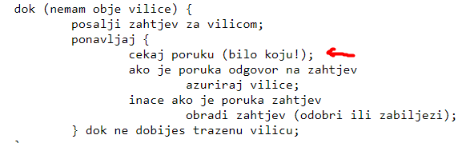
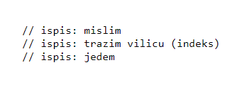

Olive Oil jesi nasao neko drugo rjesenje za ovo? ovo koje si napisao mi iz nekog razloga ne radi, i dalje bude isti error
sheriffHorsey nisam, kad mi je proradilo s tim rekao sam ajde bok
Zna neko kako ovo debuggati? Cijelu noc sam pokusao preko print statementa skuziti zasto mi kod ispravno ne radi ali dzaba. Ja pisem u C-u u Visual Studiu na Windowsima
Bica Jel možeš reć što si točno izmjenio da ti je proradilo?
Bisolvon znači li ovo da onda kad čekam lijevu vilicu, osluskujem iskljucivo lijevog susjeda i vice versa za desnu?
🤡 kad cekas na vilice, trebao bi cekati na bilo kojeg susjeda jer dok cekas na jednu vilicu, drugi susjed ti moze poslati zahtjev za drugom vilicom i to moras isto obraditi(dati ako je prljava ili zabiljeziti da te trazio ako je cista) 
Zna li tko sto se radi na predaji ovog labosa uzivo?
niknik Prošle godine nije bilo predaje ako si pisao u nekim jezicima već su oni to pokrenuli lokalno i vidjeli kako radi, a ako si pisao u jeziku koji nije podržan od njih (npr. Javi) onda si imao Teams call pa si ispred asistenta pokrenuo rješenje.
Da li dok filozof misli mora i memoritat zahtjeve za vilicama? U pseudokodu to nije eksplicitno navedeno, samo tijekom postupka nabavljanja vilica
Nocna_smjena kad filozof misli znaci da ili je tek pocetak(ima prljave vilice) ili se vratio s jela pa isto ima prljave vilice, ako tijekom razmisljanja dobije zahtjev za vilicom, ne treba pamtiti zahtjev jer ce ju sigurno odmah dati susjedu pošto je prljava
moze netko pojasniti kako riješiti problem kad imamo samo 2 filozofa?
🤡 slicno kao i sa vise filozofa, samo moras imati na umu da su lijevi i desni susjed isti broj pa moras moci na neki nacin razlikovati kada se trazi lijeva a kada desna vilica
 jel ispis treba biti samo ova tri stanja ili moze biti detaljniji od toga(npr. da se ispise kada filozof dobije zahtjev pa ga odbije itd.)
Daeyarn mislim da je to minimalno sto moras imati, a detaljniji nemre škodit
Ima li netko da radi u C-u i Visual studio code-u, ne mogu podesiti postavke da uopce pokrenem primjer iz uputa
toty dobrih 12 sati sam potrošio na to, na kraju sam se prebacio na python koji sam uspio složit za 3 minute. Ako uspiješ javi…
toty nemoj u vs code-u nego bas u visual studiu, ili se prebaci na bilo koji drugi jezik
moze netko napisati primjer kako slati i primati poruke, pokusavam cijeli dan, cijeli ostatak koda imam ali ne mogu skuziti kako ispravno dobiti i primiti poruku
reygrep https://www.fer.unizg.hr/_download/repository/pp-labos-upute.pdf imas ovdje na 5. i 6. stranici primjer send i recv
moze li se na ferku ikako otkljucati predani domaci?
Sokol saljes mail da ti otkljucaju
U obavjesti pise da imamo rok predaje do 4.4. u 12:00h Na ferku pise 4.4. 15:00h Cemu da vjerujem?